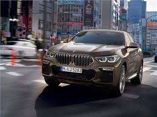
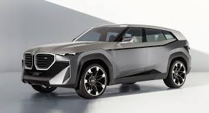

BMW AG (рус. Бэ-Эм-Вэ́[2], аббревиатура от Bayerische Motoren Werke AG, с нем. — «Баварские моторные заводы») — немецкий производитель автомобилей, мотоциклов, двигателей, а также велосипедов. Председателем компании с 2006 по 2015 год был Норберт Райтхофер, с мая 2015 года — Харальд Крюгер, а с 18 июля 2019 года — Оливер Ципсе. Главный дизайнер — Йозеф Кабан[3]. Девиз компании — «Freude am Fahren», с нем. — «С удовольствием за рулём». Для англоязычных стран был придуман также девиз «The Ultimate Driving Machine» (с англ. — «Идеальная машина для вождения»).
Содержание 1 Название 2 История 2.1 До Второй мировой войны 3 Межвоенный период 3.1 Вторая мировая война 3.2 После войны 3.2.1 Производство лёгких мотоциклов 3.2.2 Значимые даты в истории BMW 4 Собственники и руководство 5 Деятельность 6 Скандалы 7 См. также 8 Примечания 9 Литература 10 Ссылки Название
По-русски название «BMW» произносится «бэ-эм-вэ́», что близко к немецкому произношению; изредка встречается написание «БМВ». Существует также несколько «неофициальных» названий: из англоязычного произношения аббревиатуры «би-эм-дабл-ю» для мотоциклов фирмы исторически сложилось название «бимер» (англ. beemer), для автомобилей — похожее, но не равнозначное «биммер» (англ. bimmer)[4]. В России для обозначения марки могут также применяться названия «бэха», «биммер», «бумер»[5], в Греции — «beba», в арабских странах — «BM»[6]. Автомобили также могут называться соответственно их серии, например для 5-й серии — «пятёрка» (нем. Fünfer).
История До Второй мировой войны Ссылки на источники В разделе не хватает ссылок на источники (см. также рекомендации по поиску). Информация должна быть проверяема, иначе она может быть удалена. Вы можете отредактировать статью, добавив ссылки на авторитетные источники в виде сносок. Эта отметка установлена 10 июля 2011 года. BMW M5 (E39) Промышленная фирма была основана Карлом Фридрихом Раппом в октябре 1916 года, официально компания BMW была зарегистрирована 20 июля 1917 года, но первоначально — как производитель авиационных двигателей, Bayerische Flugzeug-Werke. Округ Мюнхена — Milbertshofen был выбран потому, что он располагался близко от Flugmaschinenfabrik Густава Отто — немецкого производителя самолётов.
BMW E34 В 1916 году компания подписывает контракт на производство двигателей V12 для Австро-Венгрии. Нуждаясь в дополнительном финансировании, Рапп получает поддержку Камилло Кастильони и Макса Фрица, компания воссоздаётся как Bayerische Motoren Werke GmbH. Быстрый рост предприятия в 1917 году вызвал некоторые трудности, после чего компанию покинул Рапп, руководство перешло к австрийскому промышленнику Францу Йозефу Поппу, а в 1918 году компания была переименована в BMW AG. Межвоенный период В 1919 году Франц Димер установил первый мировой рекорд BMW, поднявшись на высоту 9760 метров на аэроплане с двигателем BMW. После Первой мировой войны по условиям Версальского мирного договора 1919 года было запрещено производство самолётов в Германии, вследствие чего Густав Отто закрыл свою фабрику, а BMW перешла на производство сельскохозяйственной техники, предметов домашнего обихода и тормозов для поездов. В 1922 году восточнее мюнхенского аэропорта Обервизенфельд BMW строит своё сегодняшнее основное здание (сегодня это городской Олимпийский Центр). В 1923 году на фабрике в Мюнхене выпущен первый мотоцикл BMW. В 1924 году на самолёте, оснащённом двигателями BMW, состоялся первый межконтинентальный полёт в Персию. В 1926 году гидросамолёт Rohrbach Ro VII с двигателями BMW VI устанавливает пять мировых рекордов. В 1927 году было установлено 87 мировых авиарекордов, 29 из них — на самолётах с двигателями BMW.

В 1928 году BMW приобретает автомобильный завод в Айзенахе (Тюрингия), а с ним — и лицензию на производство небольшого автомобиля под названием Dixi. Компания заключает лицензионное соглашение на постройку радиальных двигателей с американским производителем авиамоторов Pratt & Whitney. Dixi — название первой машины BMW. Она была разработана в 1929 году Austin Motor Company, однако автомобили производились в Айзенахе до сороковых годов. В том же году Эрнст Хенне на мотоцикле с мотором BMW становится самым быстрым мотоциклистом в мире. В июне 1939 года Siemens продал свой машиностроительный филиал BMW. По итогам заключённой сделки Бранденбургские моторостроительные заводы[de] вместе со всей производственно-технической документацией, промышленными образцами, патентами, производственными мощностями и исследовательскими учреждениями, всей рабочей силой и инженерно-техническим составом перешли в собственность BMW. В собственность BMW перешли также заводы и фабрики, лаборатории и испытательные полигоны в Шпандау[de]*, Нидербарниме, Басдорфе и Зюльсдорфе, и несколько десятков тысяч занятых там работников (впоследствии на месте бывших заводов в Басдорфе и Зюльсдорфе была создана компания по производству авиадвигателей Niederbarnimer Flugmotorenwerke GmbH). На базе приобретённых предприятий в дополнение к уже имеющимся двигателестроительным заводам были созданы: фабрика авиационных и ракетных двигателей (Flugzeugturbinenfabrik) и подразделение ракетной техники и ракетного вооружения (BMW-Raketenabteilung) с исследовательским центром в Зюльсдорфе и производством в Шпандау. К осени 1940 года на ракетных заводах BMW в Шпандау и Нидербарниме было занято только немецких граждан около 10 тыс. человек[7] плюс военнопленные, к которым вскоре присоединились остарбайтеры.
К середине 1930-х компания разрослась до невиданных ранее размеров и стала представлять собой самый большой в Европе промышленный концерн, заводы BMW в Баварии превратились в крупный промышленный конгломерат. К тому времени компания уже имела наблюдательный и исполнительный советы и фактически не зависела от своего гендиректора, более того, наблюдательный совет в основной своей массе занимал конфронтационную позицию по отношению к Поппу и проводимому им курсу корпоративной политики. Франц Йозеф Попп, занимая пост генерального директора BMW с 1917 до 1942 года, руководил BMW автократически, отрицал коллегиальные принципы управления и категорически пресекал какие-либо поползновения на свою власть генерального директора, между тем основная масса высшего руководства BMW придерживались мнения о необходимости более децентрализованной и коллегиальной структуры управления. Из-за диаметрально противоположных взглядов имели место острые конфликты между Францем Поппом и человеком номер два в корпоративной иерархии Фрицем Хилле, который был членом исполнительного совета BMW с 1935 года[8]. В 1942 году под давлением наблюдательного совета и Имперского управления вооружений пост гендиректора занял Фриц Хилле (формально его должность именовалась «главный управляющий[de]*»).[9] Вторая мировая война В годы накануне и во время Второй мировой войны компания существенно диверсифицировала спектр направлений своей деятельности, включив вдобавок к моторо- и машиностроению (которые интенсифицировались за счёт наращивания производственных мощностей и привлечения бесплатных трудовых ресурсов в виде пригнанных в большом количестве остарбайтеров) такие сферы деятельности, как ракетная техника и ракетное вооружение, управляемое оружие и другие высокотехнологические, передовые на тот момент направления работы. Штаты научных, инженерно-технических и лабораторных подразделений компании были многократно увеличены. К началу 1940-х годов подразделение ракетного вооружения интенсифицировало свои эксперименты и осенью 1940 года уже было готово к развёртыванию серийного производства ряда разработанных им образцов, что не произошло по независящим от руководства компании причинам, поэтому основным направлением работы бранденбургских заводов BMW было производство реактивных двигателей для военных реактивных самолётов[7]. В сфере разработки вооружения и военной техники учёным и инженерам компании удалось забежать далеко вперёд и опередить своё время настолько, что результаты их работы даже в самом Рейхе оказались востребованы только через несколько лет, на завершающем этапе войны, а в странах антигитлеровской коалиции они стали доступны только в послевоенное время (на основе вывезенной из Германии проектно-технической документации и с использованием немецких же учёных). Среди прочего учёным компании принадлежит ряд важных открытий, изобретений и рационализаторских предложений в сфере тактического ракетного вооружения: именно в лабораториях BMW в 1941 году был проведён ряд фундаментальных исследований и научно-исследовательских работ, подтвердивших принципиальную возможность и целесообразность создания тактических ракетных вооружений пехоты и авиации. Именно сотрудники лабораторий BMW спроектировали то, что впоследствии приняло вид противотанковых управляемых ракет и других дистанционно управляемых вооружений с наведением по проводам, но по сугубо бюрократическим причинам было отвергнуто руководством немецкой военной промышленности, на волне эйфории от победоносного наступления немецких сил на Восточном фронте в середине 1941 года легкомысленно посчитавшим, что основная задача войны уже достигнута и что Советский Союз уже разгромлен и никогда не восстановится, а потому с пренебрежением отнёсшимся к столь передовым и революционным на тот момент достижениям немецких учёных[10][11].
После войны BMW E36 В апреле 1945 года Красная Армия заняла Бранденбургский промышленный район и все расположенные там предприятия BMW, все документы были конфискованы, некоторые здания использовались в качестве тюрем. К 1948 году советские власти демонтировали все бранденбургские заводы BMW, промышленные здания и сооружения были взорваны и снесены, поскольку советское руководство опасалось, что в случае начала войны с бывшими западными союзниками восточно-немецкое население охотно встанет на их сторону, а развитая промышленность Восточной Германии вновь заработает против СССР[7]. Могущественный в довоенную эпоху концерн BMW оказался после Второй мировой войны в критическом положении во многом из-за запрета на производство составлявших основу её бизнеса авиационных двигателей и уничтожения или занятия противниками Германии по мировой войне заводов концерна в Мюнхене (Американская зона оккупации Германии) и Айзенахе (Советская военная администрация Германии). Так, Мильбертсхофенский автозавод[de] под Мюнхеном, согласно решению американских оккупационных властей, подлежал сносу[12]. Как и другим немецким автомобильным компаниям с разрушенной Второй мировой войной промышленной базой, BMW понадобились годы на возрождение в качестве серьёзного производителя автомобилей: лишь в 1962 году компания выпустила на рынок автомобиль, позволивший ей выполнить эту задачу[13].
Стратегия BMW в послевоенные годы заключалась в попытках поправить дела за счёт производства мотоциклов с малой мощностью, так как после войны Союзники позволили BMW производить мотоциклы с объёмом двигателя лишь до 250 см3, а также запретили производство больших комфортабельных седанов.[источник не указан 3005 дней] Кроме того, компания потеряла завод в Айзенахе, который остался на территории, оккупированной советскими войсками, а затем во вновь образованной ГДР. Однако рыночная конъюнктура и предпринятые менеджментом BMW попытки восстановить производство авиационных моторов привели компанию BMW к самому краю пропасти, что едва не закончилось установлением над ней контроля со стороны извечного конкурента — Mercedes-Benz. Производство лёгких мотоциклов Однако персоналу компании удалось спасти BMW за счёт выпуска хозтоваров и велосипедов, что изменило решение американцев о сносе завода. Впоследствии было получено разрешение на производство и лёгких мотоциклов, так в 1948 году мотоцикл R24 из Мюнхена стал первым послевоенным изделием BMW. Как и его предшественник 1930-х годов, R24 комплектовался фирменной карданной передачей BMW, окрашивался в чёрный цвет и имел белую обивку коляски. В отличие от своего предшественника, это изделие имело одноцилиндровый двигатель рабочим объёмом всего 247 см3, гораздо более низкую цену, и, как следствие, был гораздо более доступен и пользовался большим спросом у нуждающихся в средствах передвижения немцев. К 1951 году BMW производила более 18 тыс. этих мотоциклов в год, что приносило прибыль и обеспечивало разработку новой модели — R51 — уже с 2-цилиндровым оппозитным двигателем[14].

Значимые даты в истории BMW 1951 — BMW производит свой первый послевоенный автомобиль — 501. 1954 — BMW становится чемпионом мира в гонках мотоциклов с колясками и удерживает мировое первенство следующие двадцать лет. 1955 — Отделение BMW Triebwerk GmbH возвращается к жизни. Компания ориентируется на традиции производства авиамоторов. Следующим шагом на пути к успеху стало изменение политики компании BMW с целью популяризации своей продукции у среднего класса. А первым массовым автомобилем в послевоенные годы стала BMW Isetta. Идея создания миниатюрной машины принадлежала итальянской компании Iso, а созданный ей прототип кузова был куплен немцами. 1956 — Спортивные автомобили моделей 503 и 507. 1959 — Модель 700 стала первым большим серийным успехом для автомобилей BMW. Компания BMW выставляется на продажу. 1975 — В эти годы появилась первая «тройка» в истории BMW, она была выпущена в кузове Е21. 1994 — Запущен завод BMW в Спартанберге. Открыт 16-й филиал BMW de Mexico S.A., создано торговое представительство в Пекине. 1995 — Презентация легендарного BMW Z8. Автомобиль становится звездой кинематографа и снимается в фильме о Джеймсе Бонде. 1999 — На детройтском автосалоне проходит презентация нового полноприводного внедорожника BMW X5. 2013 — Проходит презентация электромобиля BMW i3 и гибрида i8.

Собственники и руководство Штаб-квартира BMW и здание музея BMW в Мюнхене, Германия. Пазлинка и перо Этот раздел статьи ещё не написан. Согласно замыслу одного или нескольких участников Википедии, на этом месте должен располагаться специальный раздел. Вы можете помочь проекту, написав этот раздел. На 25 июля 2011 года Стефан Квандт владеет 17,4 % бумаг автопроизводителя, его сестра Сузанне Клаттен — 12,6 %, их мать Йоханна Квандт — 16,7 %. На рынке торгуются 53,3 процента акций компании[15]. Деятельность
Концерн BMW в 2007 году выпустил 1 203 482 автомобиля (падение составило 7,6 % по сравнению с аналогичным периодом 2006 года). BMW намерены уже в 2020 году увеличить производство на 25 %. Таким образом, выпустив в 2016 году 2,4 млн экземпляров авто, через 3,5 года BMW планирует выпускать не менее 3 млн.[16]. Основным конкурентом BMW на рынке легковых автомобилей является Mercedes-Benz[17]. Также конкуренцию фирме составляют автомобили Audi и Lexus[18][19]. Член Ассоциации европейских производителей автомобилей (ACEA). Основные производственные мощности компании сосредоточены в Германии (Дингольфинг, Регенсбург, Лейпциг, Мюнхен). Также автомобили собираются на предприятиях в Таиланде, Малайзии, Индии, Египте, ЮАР, во Вьетнаме и США (Спартанберг). В России автомобили BMW собираются в Калининграде («Автотор»). В Китае BMW взаимодействует с компанией Хуачэн Авто Холдинг (Huacheng Auto Holding), производящей легковые автомобили под торговой маркой Brilliance.
Скандалы В июле 2021 года принято решение, что компания заплатит за загрязнение планеты 373 миллиона евро. Так закончилось дело о картельном сговоре нескольких автоконцернов, которые использовали специальное программное обеспечение, чтобы занизить показатели по вредным выбросам при тестировании[20] В сентябре 2021 года на компанию подала в суд Германская природоохранная организация Deutsche Umwelthilfe (DUH). Исковое требование — снизить выбросы углекислого газа от их автомобилей и закончить выпуск машин с двигателями внутреннего сгорания к 2030 году. Несмотря на соответствующие правовые акты, компания отказалась выполнять эти требования, чем и спровоцировала судебные разбирательства[21]. См. также Автомобили BMW Музей BMW Двигатели BMW BMW в автоспорте Примечания Annual Report 2019. Power of choice (англ.) (недоступная ссылка). BMWGroup.com. Дата обращения: 29 апреля 2020. Архивировано 19 марта 2020 года. Как правильно: "Бэ-Эм-Вэ" или "Би-Эм-Дабл-ю"?, auto.vesti.ru (2 сентября 2016). Дата обращения 14 марта 2019. BMW обновила команду дизайнеров, vedomosti.ru, 9 февраля 2017 BMW 5 Series — Bimmer vs. Beamer vs. Beemer (англ.) (10 марта 2005). Дата обращения: 13 мая 2011. Архивировано 28 августа 2008 года. «Бэха», «бумеры». И только. Деловой Петербург (6 августа 2007). Дата обращения: 13 мая 2011. Архивировано 6 августа 2007 года. Jennifer Dylan. The Bimmer’s Bavaria (англ.). Vehicles Magazine (30 апреля 2007). Дата обращения: 13 мая 2011. Архивировано 12 октября 2008 года. Lehmann, Jörn. Einhundert Jahre Heidekrautbahn: eine Liebenwalder Sicht. — Berlin: ERS-Verlag, 2001. — S. 57 — 95 s. — (Liebenwalder Heimathefte; 4) — ISBN 3-928577-40-9. Pierer, 2011, s. 228. Werner, 2006, s. 109.
Zborowski, H. von ; Brunoy, S. ; Brunoy, O. BMW-Developments. // History of German Guided Missiles Development. / Edited by Theodor Benecke and A. W. Quick. — Brunswick, Germany: Verlag E. Appelhans & Co., 1957. — P. 297—324 — 419 p. — (AGARDograph No. 20). Backofen, Joseph E. Shaped Charges Versus Armor—Part II. // Armor : The Magazine of Mobile Warfare. — Fort Knox, KY: U.S. Army Armor Center, September-October 1980. — Vol. 89 — No. 5 — P. 20. Тони Льюин. BMW. Полная книга. Все модели с 1950 года = The Complete Book of BMW: Every Model In the World Since 1950 / Пер. с англ. К. Ткаченко. — М.: «Издательство ФАИР», 2008. — С. 23. — 384 с. — ISBN 978-5-8183-1358-0 (рус.). — ISBN 0-7603-1951-0 (англ.). Тони Льюин. BMW. Полная книга. Все модели с 1950 года = The Complete Book of BMW: Every Model In the World Since 1950 / Пер. с англ. К. Ткаченко. — М.: «Издательство ФАИР», 2008. — С. 10. — 384 с. — ISBN 978-5-8183-1358-0 (рус.). — ISBN 0-7603-1951-0 (англ.). Тони Льюин. BMW. Полная книга. Все модели с 1950 года = The Complete Book of BMW: Every Model In the World Since 1950 / Пер. с англ. К. Ткаченко. — М.: «Издательство ФАИР», 2008. — С. 24. — 384 с. — ISBN 978-5-8183-1358-0 (рус.). — ISBN 0-7603-1951-0 (англ.). Акции BMW рекордно взлетели на слухах о скупке акций. Корреспондент.net по материалам Reuters (25 июля 2011). Дата обращения: 31 января 2013. Стало известно, сколько авто в год планирует выпускать BMW | Новости Льюин, Тони. BMW. Полная книга. Все модели с 1950 года = The Complete Book of BMW. Every Model Since 1950.. — М.: ФАИР, 2008. — С. 370. — 384 с. — 2000 экз. — ISBN 978-5-8183-1358-0. Colin Barrow. The 30 Day MBA in International Business: Your Fast Track Guide to Business Success. — Kogan Page Publishers, 2011. — P. 77. — 312 p. — ISBN 9780749462147. Nick Gibbs. Audi, BMW, Mercedes look for edge with virtual showrooms (англ.) (недоступная ссылка — история ). Automotive News Europe (14 марта 2013). Дата обращения: 20 марта 2013. Volkswagen и BMW наказали за загрязнение планеты. lenta.ru. Дата обращения: 8 июля 2021. В ФРГ экологи подали в суд на BMW и Mercedes-Benz. ТАСС. Дата обращения: 21 сентября 2021.
Литература Pierer, Christian. Die Bayerischen Motoren Werke bis 1933: Eine Unternehmensgründung in Krieg, Inflation und Weltwirtschaftskrise. — München: Oldenbourg Verlag, 2011. — 270 s. — ISBN 978-3-486-70400-6. Werner, Constanze. Kriegswirtschaft und Zwangsarbeit bei BMW: Im Auftrag von MTU Aero Engines und BMW Group. — München: Oldenbourg Verlag, 2006. — 457 s. — ISBN 3-486-57792-1. Льюин Т. BMW. Полная книга. Все модели с 1950 года / Тони Льюин. — Пер. с англ. К. Ткаченко. — М.: «Издательство ФАИР», 2008. — 384 с.: ил. Научный редактор: С. В. Канунников, руководитель отдела испытаний науки и техники журнала «За рулем». ISBN 978-5-8183-1358-0 (рус.) ISBN 0-7603-1951-0 (англ.)